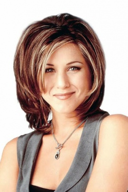

Рейчел Карен Грін (Дженніфер Еністон) — донька заможних батьків, ніколи не працювала і жила на гроші тата. Вона має двох сестер — Еммі і Джил. У Рейчел був наречений, але вона кинула його і втекла з весілля, а потім оселилася у Моніки. Вони були найкращими подругами в середній школі. У той час у Рейчел був величезний ніс, який незабаром довелося вкоротити. Життя у великому місті спочатку здавалося їй досить важким, тим паче, що їй довелося шукати роботу, чого вона раніше ніколи не робила. Спершу Рейчел працювала офіціанткою в «Центральній кав'ярні», але незабаром почала кар'єру в моді. Перша така робота була не вдалою — вона знову розливала каву для боса. Пізніше вона влаштувалася працювати в Bloomingdales.
